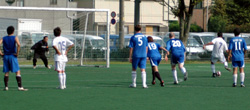
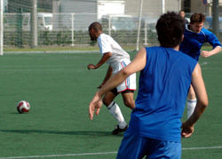
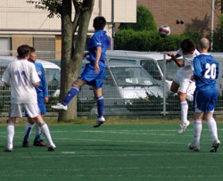

|
Hachioji Park, Sunday 14th September,
Different captain, same sort of result. Early days but Morson's first competitive game in charge ended in a 5-0 evisceration of Saitama JETs in sweaty conditions more suited to sucking ice lollies down at the beach. There was also nice symmetry for BFC in reversing that humiliating Cup final defeat by the Little Green Men.
Aranda scoring twice, once from the spot, and Day snapping up one from close range continued a theme from last season but BFC will do well to produce a better goal than Taka's scorcher which put BFC 2-0 up.
Shosuke Yamagishi, who had already been giving the JETs defenders sweaty socks, forged the opening goal, cutting in from the left to curl a shot onto the bar, Day quickly stubbing out his Marlboro Light to prod home from all of 30 centimetres.
There was sexiness about BFC's second, a flowing move involving ninja flicks, flashing lights and the sound of thunder which culminated in Taka's emphatic finish, the little fella smashing a left-foot shot into the top corner from 24.7 metres further out than Day's.
This a man with a metal rod holding his shoulder in one place -- and who photographs birds in bikinis FOR A LIVING (an irrelevant but cool snippet)!!!
A twice-taken peno from Aranda for an infringement difficult to see clearly from right-back (the look on Dan's face as a bloke biologically old enough to be his dad overlapped him a real Kodak moment) made it 3-0.
Team talk had warned: 'Jorge does not like South Americans!' This has yet to be scientifically proven as fact but it is true he and Carlos do not exchange Christmas cards.
Brazilian Fabio had a close encounter with Jorge on his BFC debut, prompting a yellow card, brandished with a withering look from the bandana-wearing Mexican ref, who then ordered Carlos to retake his spot kick, presumably because Fabio had looked at him the wrong way.

In fairness, Jorge had a good game, although there were few handbags, perhaps a result of BFC's dominance.
Poor Brian had little to do in goal, with Morson and Doyle gobbling up any signs of danger, while Sako worked hard to provide the back four with a shield alongside the attack-mad Paraguayan, whose compass points only one way. Bless him.
Carlos, obviously bored with playing keepy-uppy out by the left touchline, belted in BFC's fourth from an impossible angle, before Keisuke rolled in a fifth as Morson and Doyle began unfolding the deckchairs and an underemployed Brian chased the ice cream van up the street.
The floodgates never really opened, however, credit to an industrious JETs side who have proved stubborn opposition in the past. Still, 5-0 will do for a start.
Report by Pinky and Diane
|